Проект «Созвучие» в Казаклии
22 мая 2025 года
В Доме культуры села Казаклия состоялся яркий литературно-музыкальный праздник в рамках проекта «Созвучие».
Мероприятие объединило поэтов, музыкантов и творческих людей из разных регионов. Программа началась с возложения цветов к памятнику Неизвестному солдату.
Зрители услышали стихи, песни и авторские произведения на разных языках, а также стали свидетелями живого творческого общения.
Особую атмосферу создали выступления ансамбля «Севда» и коллектива «Şennik».
Праздник прошёл в тёплой и душевной атмосфере, объединяя людей через культуру и творчество.
📸 Фотогалерея
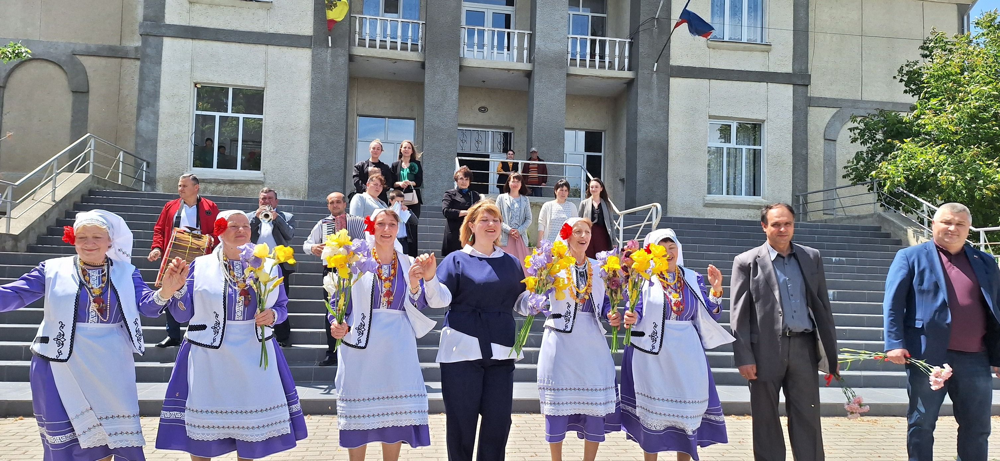
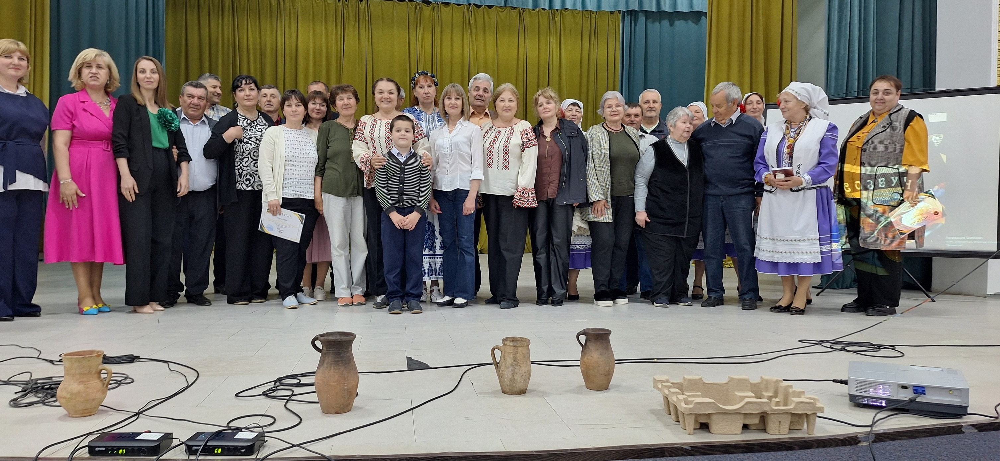
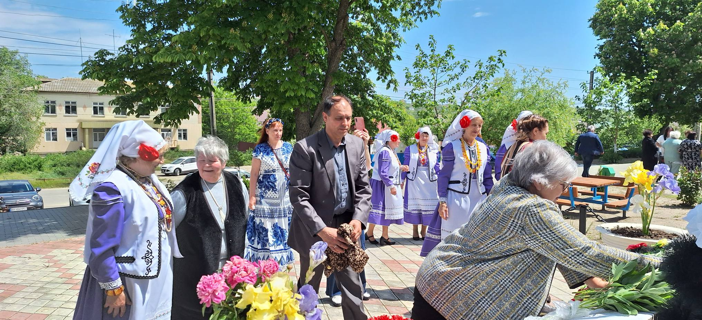
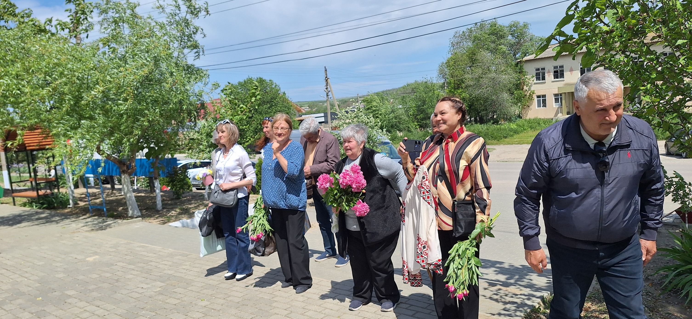
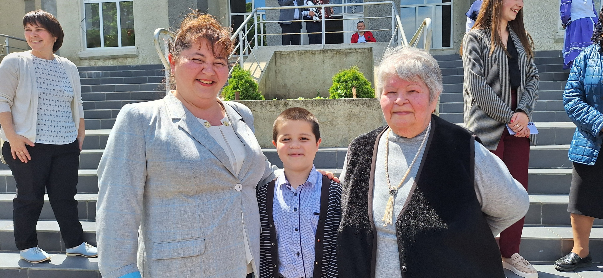
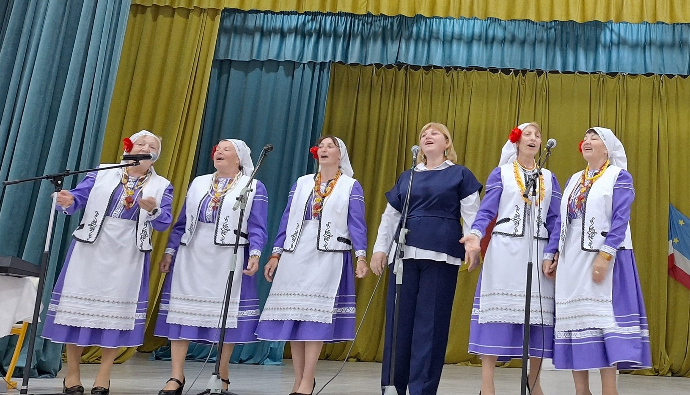
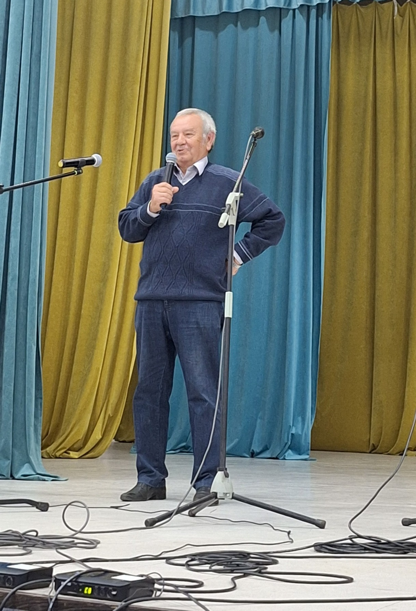
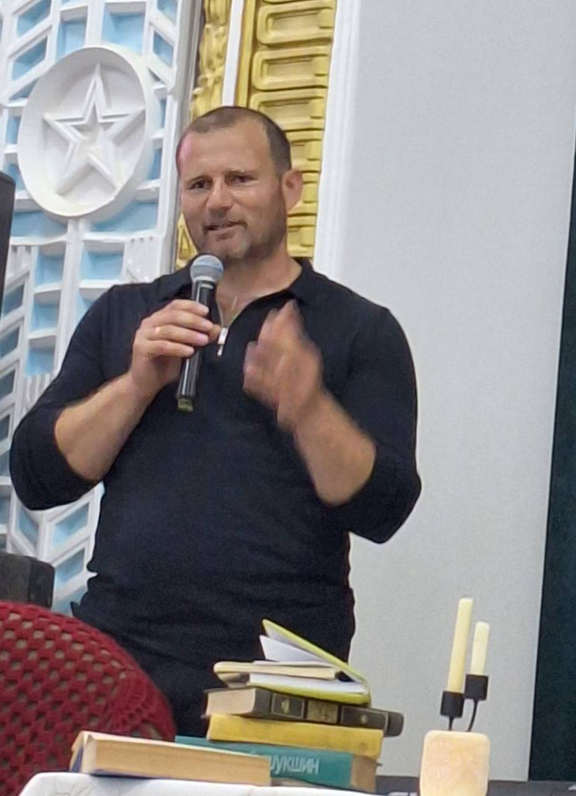
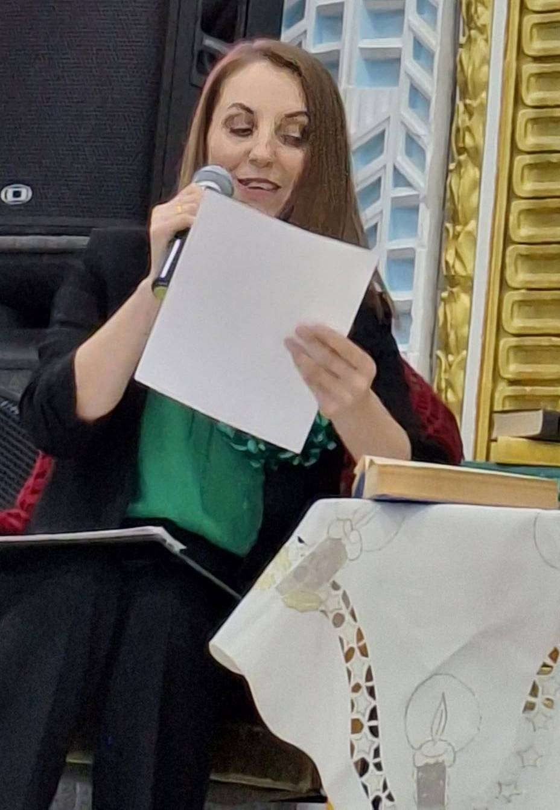
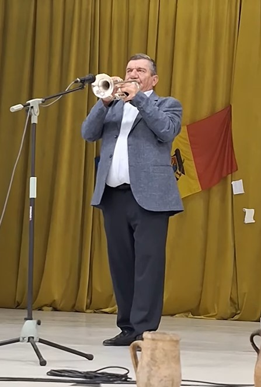
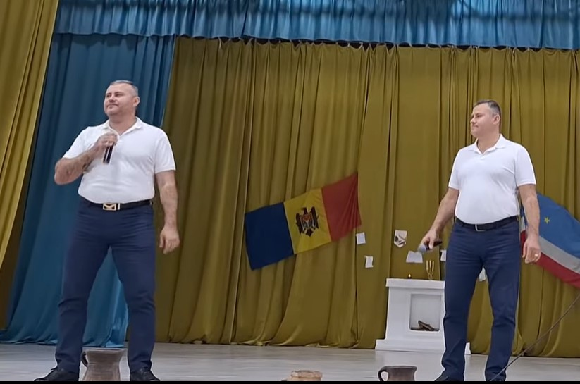